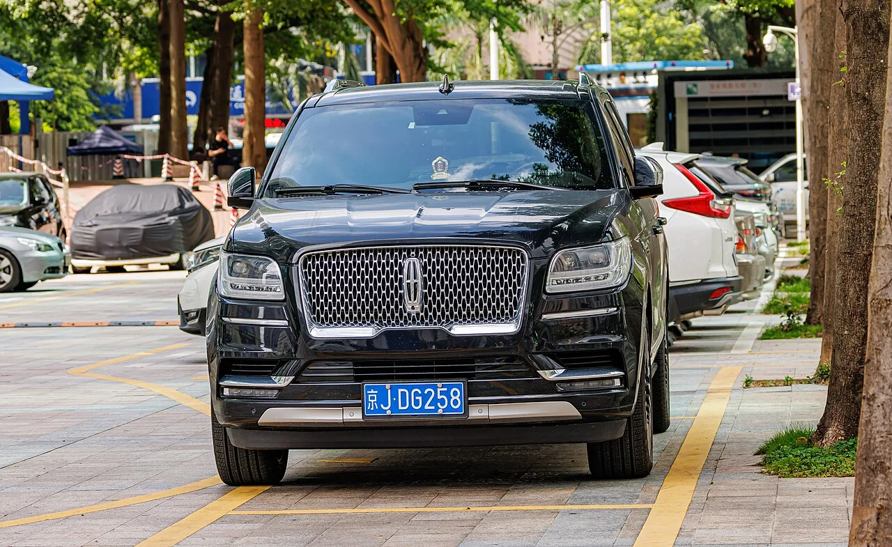
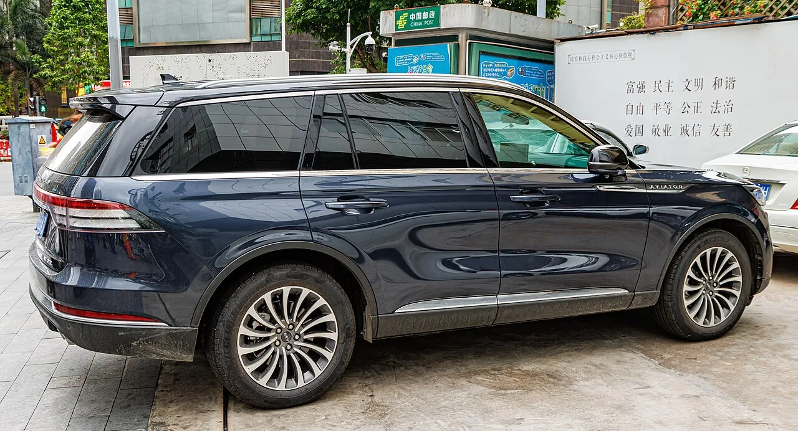
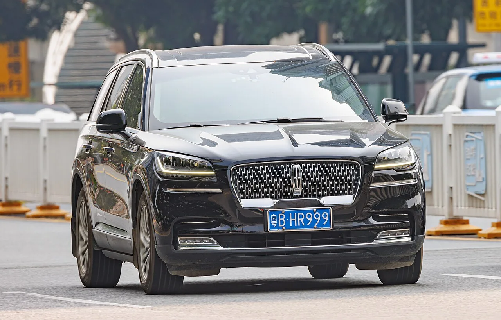

▲ 링컨 내비게이터 블랙 라벨. 5년 만에 가치의 60%가 사라졌다
2021년형 링컨 내비게이터 L 블랙 라벨의 신차 가격은 10만1,855달러였습니다. 원화로 약 1억4,900만 원입니다.
5년이 지난 지금, 관리가 잘된 개체가 약 4만6,000달러에 거래됩니다. 5만5,000달러, 약 8,100만 원이 사라졌습니다.
그런데 링컨에는 정반대 이야기도 있습니다. 신형 에비에이터는 트윈터보 V6를 얹고도 4기통 제네시스 GV80보다 쌉니다. 두 가지를 같이 보면 그림이 달라집니다.
1. 60% — 럭셔리 SUV 중 최대 낙폭
먼저 감가율을 경쟁 모델과 나란히 놓아보겠습니다.
| 모델 | 5년 감가율 |
|---|---|
| 링컨 내비게이터 | 약 60% |
| 캐딜락 에스컬레이드 ESV | 50.1% |
| 메르세데스-벤츠 GLS 580 | 39.1% |
내비게이터가 압도적입니다. 에스컬레이드보다 10%p, GLS보다 21%p 더 빠집니다.
금액으로 환산하면 같은 5년을 타도 에스컬레이드 대비 약 7,000달러, GLS 대비 약 1만4,000달러를 더 잃는다는 계산이 나옵니다.
중고 시세 폭도 넓습니다. 평균 5만7,498달러인데 범위는 3만2,995달러에서 6만2,998달러까지 벌어집니다. 상태와 주행거리에 따라 두 배 가까이 차이가 납니다.
2. 왜 이렇게 빠지나
이 낙폭에는 몇 가지 요인이 겹칩니다.
①브랜드 잔존가치. 미국 럭셔리 SUV 시장에서 링컨은 캐딜락·벤츠·BMW보다 중고 수요가 얇습니다. 사려는 사람이 적으면 값은 내려갑니다.
②블랙 라벨의 옵션 값. 10만1,855달러라는 가격 자체가 최상위 트림에 옵션을 얹은 결과입니다. 신차에서 붙은 옵션 값은 중고에서 거의 회수되지 않습니다. 시작가가 높을수록 감가율은 커집니다.
③대형 SUV 공통 특성. 유지비·연비 부담이 커 중고 시장에서 구매층이 제한됩니다.
즉 내비게이터가 특별히 나쁜 차라서가 아니라, 브랜드와 트림 구조가 겹친 결과에 가깝습니다.

▲ 내비게이터의 3.5L 에코부스트 V6는 450마력·510lb-ft를 낸다
3. 사는 쪽에서 보면 이야기가 뒤집힌다
파는 사람에게 재앙인 숫자는 사는 사람에게 기회입니다.
4만6,000달러(약 6,700만 원)로 살 수 있는 것을 정리하면 이렇습니다.
💰 4만6,000달러에 들어오는 것
- 3.5리터 트윈터보 V6 — 450마력, 510lb-ft
- 10단 자동변속기
- 0-60mph 5.5초 미만 — 2.5톤급 대형 SUV로서는 상당한 수치
- 블랙 라벨 사양 — 링컨 최상위 트림의 실내 마감과 편의장비
- L 바디 — 롱휠베이스로 3열과 적재 공간 확보
핵심은 파워트레인의 신뢰성입니다. 3.5리터 에코부스트 V6는 F-150을 비롯해 포드가 대량으로 써온 엔진이고, T3 플랫폼 역시 검증된 구조입니다.
감가가 큰 것과 차가 잘 망가지는 것은 다른 문제입니다. 내비게이터는 전자의 경우입니다.
주행거리를 더 감수하면 값은 더 내려갑니다. 14만4,000~16만km 개체는 4만 달러 미만에서도 찾을 수 있습니다.
4. 반대편 — 신형 에비에이터가 GV80보다 싸다
링컨의 다른 얼굴입니다. 신형 에비에이터와 제네시스 GV80을 나란히 놓으면 흥미로운 구도가 나옵니다.
| 항목 | 링컨 에비에이터 | 제네시스 GV80 |
|---|---|---|
| 시작가 | 5만6,910달러 | 5만7,700달러 |
| 기본 엔진 | 트윈터보 3.0L V6 | 터보 2.5L 직렬 4기통 |
| 출력 | 383마력 / 415lb-ft | 300마력 / 311lb-ft |
| 변속기 | 10단 자동 | 8단 자동 |
| 0-60mph(추정) | 약 5.6초 | 약 6.1초 |
| 3열 | 기본 (6인승) | 어드밴스드 트림 6만8,600달러부터 |
에비에이터가 790달러 싼데 엔진은 두 기통 더 많고 출력은 83마력 높습니다. 게다가 3열이 기본입니다.
GV80에서 3열을 쓰려면 어드밴스드 트림(6만8,600달러)까지 올라가야 합니다. 1만1,690달러 차이입니다.
GV80에도 트윈터보 3.5L V6가 있지만 7만5,950달러이고, 출력은 375마력으로 오히려 에비에이터보다 8마력 낮습니다.

▲ 신형 에비에이터는 5만6,910달러에 트윈터보 V6 383마력과 3열을 기본으로 넣었다
5. 두 이야기가 사실 하나인 이유
감가율 1위와 가격 경쟁력. 언뜻 상반돼 보이지만 같은 원인의 앞뒤입니다.
링컨은 브랜드 프리미엄이 약합니다. 그래서 같은 사양을 넣고도 값을 높게 부를 수 없습니다. 신차 시장에서는 이것이 가성비로 나타납니다.
그리고 중고 시장에서는 같은 이유가 낮은 잔존가치로 되돌아옵니다. 브랜드를 보고 사는 수요가 적으니 값이 빨리 빠집니다.
결국 링컨을 사는 방법은 두 가지로 갈립니다.
🔑 링컨을 사는 두 가지 방법
- 신차 — 경쟁차보다 좋은 사양을 싸게 산다. 대신 감가는 감수한다
- 중고 — 남이 감가를 떠안은 뒤에 들어간다. 이쪽이 손익 구조는 유리하다
피해야 할 조합은 신차를 최상위 트림으로 사서 5년 뒤 파는 것입니다. 2021년형 내비게이터 L 블랙 라벨이 정확히 그 사례입니다.

▲ 브랜드 프리미엄이 약한 것이 신차에서는 가성비로, 중고에서는 감가로 나타난다
6. 정리
2021년형 링컨 내비게이터 L 블랙 라벨은 10만1,855달러에서 5년 만에 약 4만6,000달러가 됐습니다. 감가율 약 60%로 럭셔리 SUV 중 최대이며, 에스컬레이드 ESV(50.1%)와 GLS 580(39.1%)을 크게 앞섭니다.
다만 파워트레인 자체는 검증된 구조입니다. 3.5L 트윈터보 V6 450마력에 10단 자동, 0-60mph 5.5초 미만입니다. 중고로 접근하면 조건이 완전히 달라집니다.
신차 쪽에서는 에비에이터가 5만6,910달러에 트윈터보 V6 383마력과 3열을 기본으로 넣어, 4기통 300마력의 GV80(5만7,700달러)보다 싸면서 사양이 앞섭니다.
두 이야기의 뿌리는 같습니다. 브랜드 값을 못 받는 대신 내용을 채워 넣는 방식이고, 그 대가가 중고 시장에서 돌아오는 구조입니다.